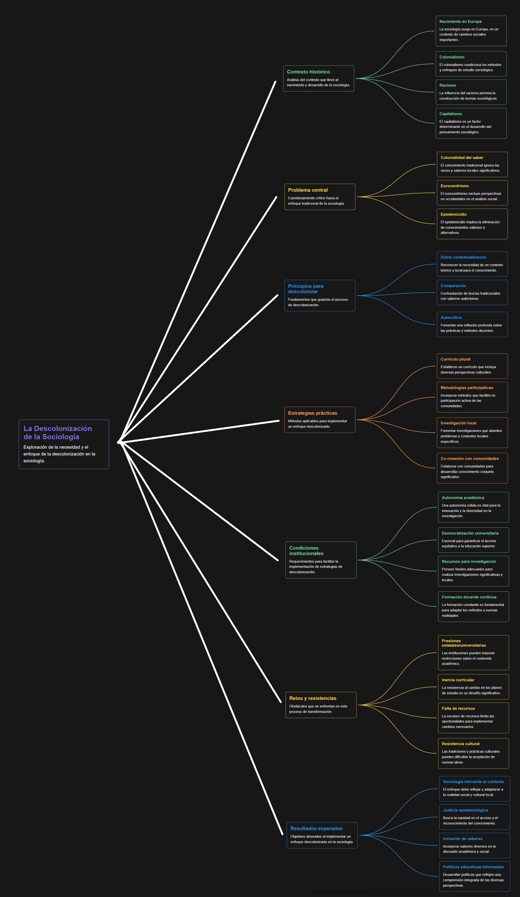

La Descolonización de la Sociología: Un Desafío Pendiente - Compiló: Mgs: Álvaro Diaz
Actividad
1. Realizar una lectura exploratoria y con los términos desconocidos elaborar el glosario.
Descolonización de la sociología: Proceso crítico que busca quitar la hegemonía epistemológica europea en la disciplina, integrando y valorizando saberes locales y otras formas de conocimiento.Colonialidad / Colonialidad del saber: Persistencia de relaciones de poder propias del colonialismo que privilegian el conocimiento occidental y marginan otros saberes.
Epistemicidio: Destrucción, invisibilización o deslegitimación sistemática de saberes de pueblos colonizados.
Doble contextualización: Principio que propone situar teorías sociológicas dentro de su contexto europeo original y, simultáneamente, contrastarlas con el contexto local para entender su alcance y límites.
Comparación (metodológica): Poner en diálogo teorías y saberes distintos para enriquecer la comprensión de fenómenos sociales.
Autocrítica: Reflexión crítica sobre el propio lugar del docente, la institución y las prácticas académicas para reconocer sesgos y limitaciones.
Eurocentrismo: Perspectiva que considera la experiencia europea como norma o centro del conocimiento universal.
Epistemologías del Sur: Enfoque que reclama y valida los conocimientos producidos en el sur global (indígenas, afrodescendientes, populares) como fuentes legítimas de saber.
Modernidad (en el sentido crítico): Proyecto histórico-cultural occidental ligado a la razón, ciencia y progreso que, en ocasiones, ha impuesto sus modelos sobre otras culturas.
Democratización universitaria: Apertura y participación amplia de estudiantes, docentes y comunidades en decisiones académicas y curriculares.
Autonomía académica: Capacidad de las instituciones y unidades académicas para diseñar programas y prácticas sin interferencias que impidan innovación crítica.
Currículo descolonial / plural: Programa de estudios que incorpora autores, prácticas y saberes locales y del sur global junto a la tradición clásica.
Metodologías participativas / investigación-acción: Métodos que implican a la comunidad en la construcción del conocimiento y en la resolución de problemas concretos.
Saber local / conocimiento situado: Conocimientos producidos en contextos específicos (prácticas, tradiciones, oralidades) que aportan explicaciones válidas sobre la realidad local.
Presiones institucionales: Obstáculos administrativos, burocráticos o políticos que limitan la innovación docente y la inclusión de perspectivas decoloniales.
2. ¿Cómo puede enseñarse una disciplina tan colonial como la sociología en un contexto extraeuropeo sin perpetuar la dominación cultural y epistemológica?
Rta: Enseñar la sociología en contextos extraeuropeos sin reproducir la dominación cultural requiere un cambio profundo en el enfoque educativo. La enseñanza debe partir del reconocimiento de la diversidad epistémica y del carácter histórico y situado del conocimiento sociológico.
Esto implica:
Contextualizar las teorías sociológicas: comprender que las ideas de autores clásicos como Marx, Weber o Durkheim surgieron en contextos europeos específicos y que no pueden aplicarse de forma universal.
Dialogar con saberes locales: incluir conocimientos y experiencias propias de los pueblos del sur global (indígenas, afrodescendientes, campesinos, entre otros).
Promover la reflexión crítica: que los estudiantes cuestionen el origen, los intereses y las limitaciones del conocimiento académico.
Fomentar la co-creación del conocimiento: maestros y estudiantes deben analizar la realidad social de su propio contexto, conectando teoría y práctica.
Evitar la imitación acrítica del modelo europeo: la sociología debe adaptarse a los problemas reales de la región, no solo repetir marcos teóricos ajenos.
En síntesis, enseñar sociología de forma descolonial implica reconocer las raíces coloniales del saber, pero al mismo tiempo transformarlas desde el diálogo, la crítica y la inclusión de voces diversas.
3. ¿Qué principios y estrategias pueden guiar la descolonización de la sociología y hacerla más inclusiva y relevante para los contextos locales?.
Rta: Los principios fundamentales propuestos en el texto son la doble contextualización, la comparación y la autocrítica.
Doble contextualización: consiste en ubicar las teorías sociológicas dentro de su contexto histórico y cultural europeo, y luego contrastarlas con los saberes locales para generar una mirada más amplia y pertinente.
Comparación: permite poner en diálogo distintos sistemas de conocimiento (académico, popular, ancestral, comunitario) para enriquecer la comprensión de los fenómenos sociales.
Autocrítica: exige que docentes e instituciones reflexionen sobre sus propios sesgos, prácticas de enseñanza y posiciones de poder.
A partir de estos principios, las estrategias de descolonización incluyen:
Reformar los planes de estudio incorporando autores y experiencias del sur global.
Promover metodologías participativas, críticas y reflexivas.
Incentivar investigaciones locales que den voz a comunidades históricamente marginadas.
Desarrollar espacios de diálogo intercultural donde se reconozcan diferentes formas de producir conocimiento.
Con estas acciones, la sociología se vuelve más inclusiva, democrática y coherente con las realidades latinoamericanas.
4. ¿Qué condiciones institucionales y estructurales son necesarias para implementar una enseñanza de la sociología que sea decolonial y crítica?.
Rta: Para que la descolonización de la sociología sea posible, no basta con el compromiso personal del docente: se requieren transformaciones institucionales y estructurales.
Entre las más importantes están:
Autonomía académica: las universidades deben tener libertad para innovar en sus programas sin presiones burocráticas o estatales que impongan un modelo único de enseñanza.
Democratización universitaria: incluir a estudiantes, docentes y comunidades en la toma de decisiones académicas.
Fomento de la investigación crítica: crear condiciones materiales (tiempo, recursos, incentivos) para que los docentes escriban, publiquen e investiguen desde perspectivas decoloniales.
Currículos abiertos y flexibles: que permitan integrar saberes locales y regionales, no solo los de origen europeo.
Formación docente permanente: capacitar al profesorado en pensamiento crítico, pedagogía decolonial y metodologías participativas.
Reconocimiento institucional del saber local: valorar la producción académica comunitaria, los estudios sobre pueblos originarios y las experiencias sociales del entorno.
En conjunto, estas condiciones buscan construir una universidad más crítica, reflexiva y comprometida con la justicia epistemológica, capaz de formar sociólogos que comprendan y transformen sus realidades locales.
5. Realizar un mapa mental para socializarlo al grupo.
